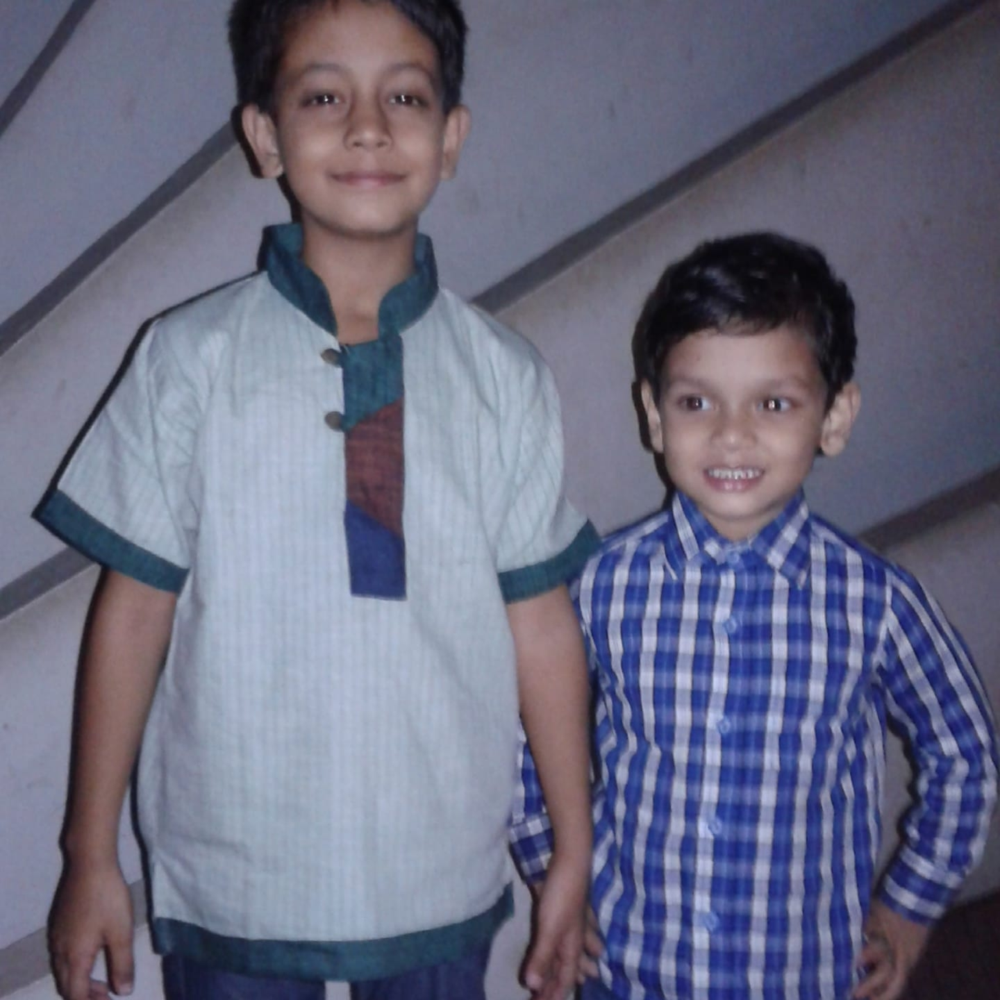
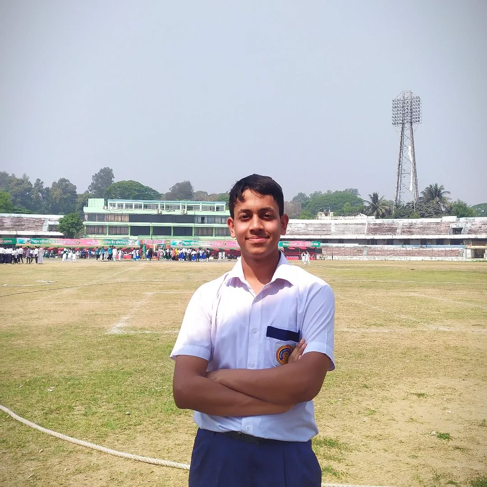
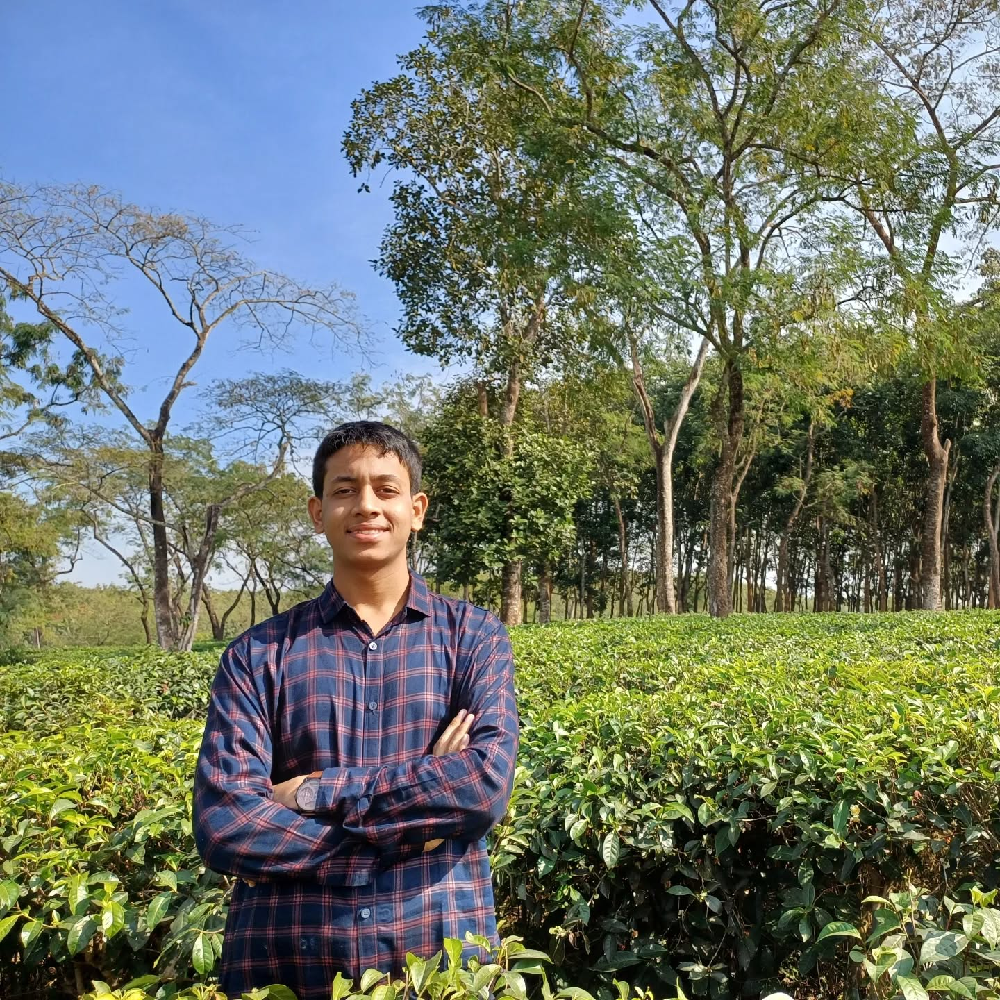

My Gallery





My name is Rowshan Hamid, but I'm also known as Jabir. I was born on May 23, 2008, in Chittagong, Bangladesh. I'm currently a student of Class 10 at Nasirabad Government High School, which I joined in 2020 through a competitive admission test.
I have a profound passion for poetry, and one of my poems, "রণ-প্রাণ", was published in my school magazine in 2024. Writing allows me to express my deepest thoughts and emotions. Alongside literature, I deeply enjoy mathematics—it challenges my intellect and sharpens my analytical thinking. The beauty of solving complex problems gives me immense satisfaction.
Music is another essential part of my life that brings me peace and inspiration. Whether listening to soulful melodies or playing instruments, music helps me find balance in my busy student life.
I strive to maintain a disciplined lifestyle and stay focused on both my academic pursuits and personal development. My philosophy centers on hard work, integrity, and the meaningful application of my talents to contribute positively to my community and the world at large.
আমার নাম রওশন হামিদ, তবে অনেকে আমাকে জাবির নামেও চেনে। আমি ২০০৮ সালের ২৩ মে চট্টগ্রামে জন্মগ্রহণ করি। বর্তমানে আমি নাসিরাবাদ সরকারি উচ্চ বিদ্যালয়ের দশম শ্রেণির ছাত্র। আমি ২০২০ সালে ভর্তি পরীক্ষার মাধ্যমে এই স্কুলে ভর্তি হই।
আমি কবিতা লেখায় গভীরভাবে আগ্রহী, এবং আমার লেখা "রণ-প্রাণ" নামের একটি কবিতা ২০২৪ সালে আমাদের বিদ্যালয়ের ম্যাগাজিনে প্রকাশিত হয়। কবিতার মাধ্যমে আমি আমার গভীরতম চিন্তা ও অনুভূতি প্রকাশ করতে পারি। সাহিত্যের পাশাপাশি আমি গণিত খুব পছন্দ করি—এটি আমার বুদ্ধিবৃত্তিক চিন্তাশক্তিকে তীক্ষ্ণ করে। জটিল সমস্যা সমাধানের সৌন্দর্য আমাকে গভীর তৃপ্তি দেয়।
সংগীত আমার জীবনের আরেকটি অবিচ্ছেদ্য অংশ যা আমাকে শান্তি ও অনুপ্রেরণা দেয়। গান শুনতে বা বাজাতে যাই কেন, সংগীত আমার ব্যস্ত ছাত্রজীবনে ভারসাম্য বজায় রাখতে সাহায্য করে।
আমি একটি শৃঙ্খলাবদ্ধ জীবনযাপন বজায় রাখার চেষ্টা করি এবং আমার শিক্ষাগত লক্ষ্য ও ব্যক্তিগত উন্নয়নের দিকে মনোনিবেশ করি। আমার দর্শন কেন্দ্রীভূত হয়েছে পরিশ্রম, সততা এবং আমার প্রতিভার অর্থপূর্ণ ব্যবহারের উপর—যাতে আমি আমার সম্প্রদায় ও বিশ্বের জন্য ইতিবাচক অবদান রাখতে পারি।